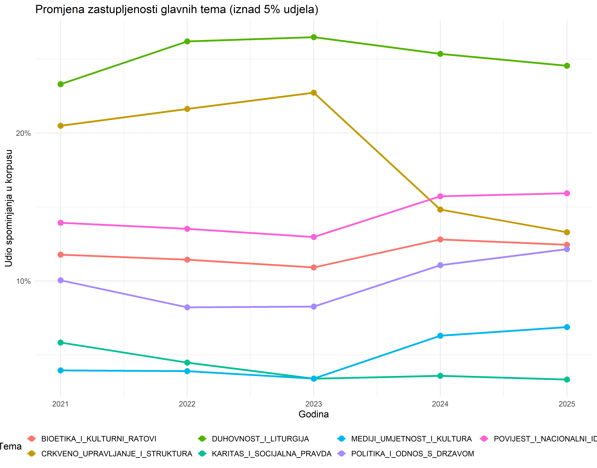
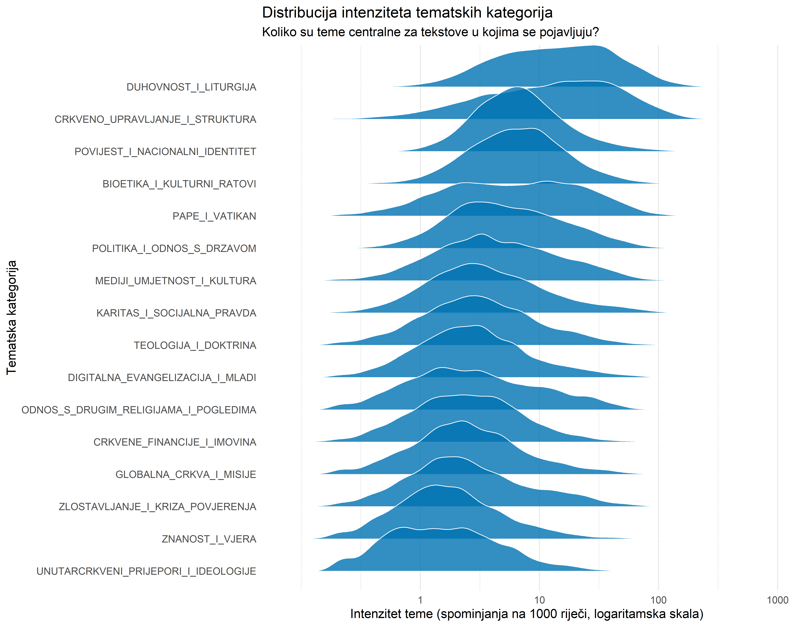
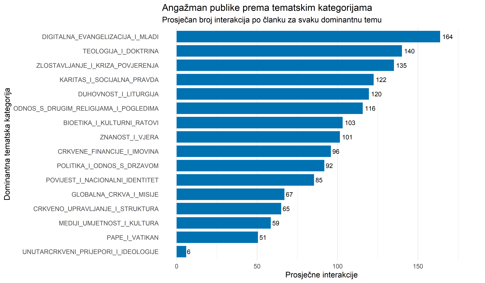
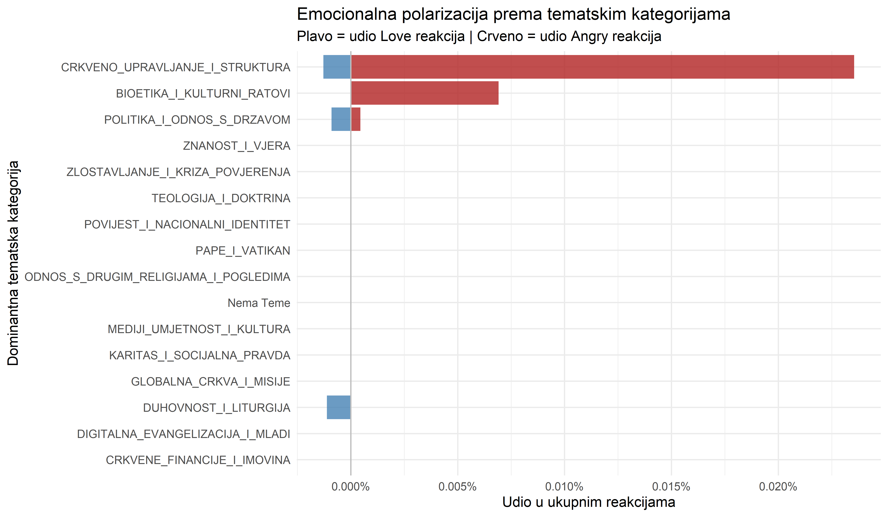
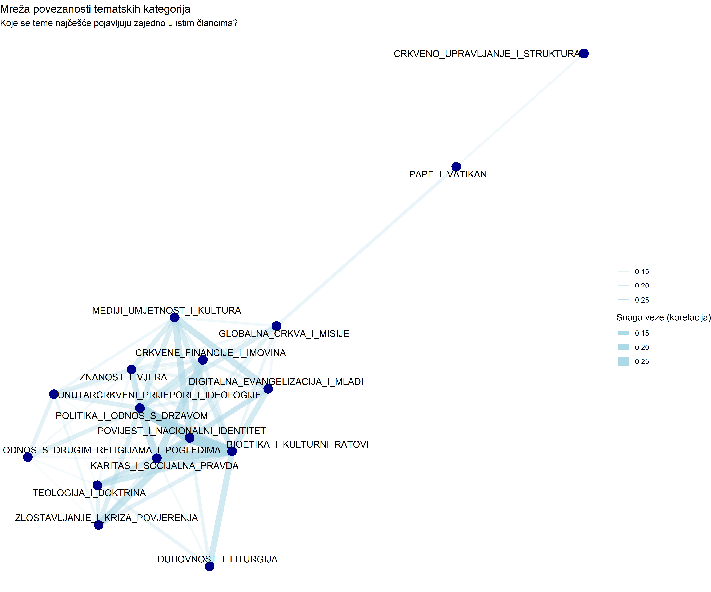

Anatomija diskursa katoličkog digitalnog prostora u Hrvatskoj (2021-2025)
Uvod u analizu sadržaja diskursa
Nakon mapiranja ključnih aktera i platformi u našoj prvoj analizi, ovo istraživanje usmjerava analitički fokus na sadržajnu strukturu digitalnog diskursa. Primjenjujući metode obrade prirodnog jezika na korpusu od preko 610 tisuća medijskih objava u razdoblju 2021 do 2025, istraživanje premješta fokus s pitanja tko i gdje na fundamentalno pitanje o čemu se govori.
Cilj je stvoriti anatomiju diskursa koja obuhvaća tri analitičke razine. Prvo, identifikaciju glavnih tematskih kategorija koje strukturiraju raspravu. Drugo, mjerenje njihovog intenziteta, utjecaja i polarizacijskog potencijala. Treće, otkrivanje obrazaca međusobne povezanosti tema i njihove temporalne dinamike.
Istraživanje koristi vođeni pristup tematskom modeliranju. Na temelju teološke i komunikološke ekspertize definiranih je 16 ključnih tematskih kategorija. Ovaj pristup omogućuje preciznu i interpretativnu klasifikaciju sadržaja, nadilažeći ograničenja isključivo strojnog učenja koje često generira tematske kategorije slabije interpretabilnosti.
Leksička struktura korpusa
Prije detaljne tematske analize, prezentira se pogled iz široke perspektive na leksičku strukturu korpusa. Sljedeći oblak riječi prikazuje 100 najfrekventnijih smislenih riječi, odnosno imenica, pridjeva i glagola, u cjelokupnom korpusu od preko 250.000 medijskih objava. Veličina svake riječi proporcionalna je njenoj ukupnoj frekvenciji u korpusu.
Ovaj vizualni sažetak odmah otkriva ključne entitete i koncepte koji čine srž diskursa. Dominiraju riječi crkva, papa, biskup, Hrvatska, život, godina, čovjek, vjera i molitva, što upućuje na središnje koncepte i aktere katoličkog digitalnog prostora.
Riječi poput crkva i papa nisu samo statistički ključne, one evociraju svakodnevni život hrvatskih vjernika. Ove riječi označavaju kontinuum iskustva, od intimnosti nedjeljnih misa u lokalnim župama do praćenja medijskih rasprava o vatikanskim odlukama. Njihova prisutnost u korpusu pokazuje kako katolička tematika prožima istovremeno duhovni i društveni sloj hrvatskog društva. Sadržaj o vjeri nije odvojen od društvene stvarnosti, već predstavlja integralni dio javnog diskursa, spajajući privatnu pobožnost s javnim angažmanom.
Struktura tematskog pejzaža
Prvi analitički korak obuhvaća razumijevanje opće strukture diskursa. Koje tematske kategorije dominiraju prostorom, a koje zauzimaju marginalne pozicije? Kako se njihova zastupljenost mijenja kroz promatrano razdoblje? Koliko su te teme centralne za članke u kojima se pojavljuju?
Temporalna dinamika tematskih kategorija
Analiza udjela svake tematske kategorije u ukupnom broju spominjanja otkriva relativno stabilnu strukturu, ali i suptilne promjene kroz promatrano razdoblje. Teme vezane za Duhovnost i liturgiju te Crkveno upravljanje i strukturu čine okosnicu diskursa. Značajan udio zauzimaju i teme koje povezuju Crkvu sa širim društvenim kontekstom, posebno Politika i odnos s državom te Bioetika i kulturni ratovi.

Intenzitet i centralnost tematskih kategorija
Frekvencija spominjanja tema nije jedini relevantan indikator. Potrebno je razumjeti i centralnost svake teme za tekstove u kojima se pojavljuje. Ovaj grafikon prikazuje distribuciju intenziteta tematskih kategorija, mjerenog brojem tematskih spominjanja normaliziranih na tisuću riječi.
Teme s distribucijom pomaknutom udesno, poput Duhovnosti i liturgije, karakterizira visoka centralnost. Kada se ove teme pojave u tekstu, one obično predstavljaju primarni fokus i mogu se smatrati glavnom viješću. Teme s distribucijom bliže lijevoj strani, poput Unutarcrkvenih prijepora i ideologija, češće se spominju usputno, kao kontekstualni element unutar tekstova čija je primarna tema drugačija.

Utjecaj i recepcija tematskih kategorija
Nakon mapiranja tematske strukture, analiza se usmjerava na način na koji publika reagira na različite tematske kategorije. Koje teme generiraju najveći angažman publike? Koje teme izazivaju najsnažnije emocionalne reakcije i koje su to reakcije?
Angažman publike prema tematskim kategorijama
Analiza prosječnog broja interakcija po članku, kategorizirano prema dominantnoj temi, otkriva značajne varijacije u angažmanu. Teme koje se tiču Unutarcrkvenih prijepora i ideologija, Bioetike i kulturnih ratova te Zlostavljanja i krize povjerenja generiraju značajno veći angažman od tema vezanih za Duhovnost i liturgiju ili institucionalno funkcioniranje Crkve.
Ovaj obrazac upućuje na mehanizam prema kojem konflikt, kontroverza i krizni narativi djeluju kao ključni pokretači interakcija u digitalnom prostoru. Teme koje izazivaju neslaganje ili zahtijevaju zauzimanje stava aktiviraju publiku na participaciju, dok teme konsenzusa ili rutinske prirode generiraju pasivniji prijem.

Emocionalna polarizacija prema tematskim kategorijama
Analizirajući Facebook reakcije, moguće je rekonstruirati emocionalnu valencu odgovora publike na različite tematske kategorije. Fokus je na dihotomiji između pozitivnih reakcija, reprezentiranih reakcijom Love, i negativnih reakcija, reprezentiranih reakcijom Angry.
Rezultati su jasni i konzistentni s prethodnim nalazima. Teme vezane za Duhovnost i liturgiju te Karitas i socijalnu pravdu dominantno izazivaju pozitivne reakcije. Ove teme rezoniraju s zajedničarskim aspektima vjere i solidarnosti. Nasuprot tome, teme Bioetike i kulturnih ratova, Politike i odnosa s državom te Zlostavljanja i krize povjerenja generiraju najveći udio negativnih reakcija, potvrđujući njihovu ulogu kao primarnih točaka polarizacije u katoličkom digitalnom prostoru.

Pozitivne reakcije na teme poput Karitasa i socijalne pravde odražavaju toplinu zajedničkih akcija i solidarnosti. Ove reakcije često prate izvještaje o humanitarnim kampanjama Crkve tijekom kriznih situacija, poput potresa ili izbjeglička kriza. Reakcije Love simboliziraju priznanje i emocionalnu podršku društveno korisnim aktivnostima crkvenih institucija.
Nasuprot tome, ljutnja koja se manifestira u reakcijama na teme Bioetike i kulturnih ratova signalizira duboke podjele u hrvatskom društvu oko pitanja života, etike i obiteljskih vrijednosti. Ova ljutnja nije samo odgovor na sadržaj članaka, već odražava fundamentalne svjetonazorske sukobe koji karakteriziraju suvremeno hrvatsko društvo. Bioetičke teme djeluju kao okidač za intenzivne reakcije jer zadiru u pitanja identiteta, morala i odnosa između religijske i sekularne sfere.
Akteri i narativni okviri
Nakon identifikacije tematskih kategorija i mjerenja njihovog utjecaja, analiza prelazi na ispitivanje aktera koji nose te narative te načina na koji se teme međusobno povezuju u šire narativne okvire. Ova sekcija integrira tematsku analizu s analizom aktera i mrežnom analizom diskursa.
Protagonisti tematskih kategorija
Svaka tematska kategorija ima svoje glavne protagoniste, odnosno aktere koji se najčešće spominju u kontekstu te teme. Analizom najfrekventnijih imenskih entiteta unutar svake dominantne teme dobiva se uvid u to koji su pojedinci i institucije nositelji specifičnih narativa.
Rezultati pokazuju očekivanu ali važnu strukturu. Političari dominiraju temama vezanim za Politiku i odnos s državom, gdje se najčešće spominju imena aktualnih političkih čelnika. Crkveni velikodostojnici dominiraju institucionalnim temama i temama vezanim za Pape i Vatikan. Ova diferencijacija potvrđuje funkcionalne granice između različitih tematskih domena unutar katoličkog digitalnog prostora.

Mreža povezanosti tematskih kategorija
Tematske kategorije se rijetko pojavljuju izolirano. One se kombiniraju i isprepliću, tvoreći šire narativne okvire. Analizirajući ko okurenciju tematskih kategorija unutar istih članaka, moguće je mapirati strukturu ovih veza. Mreža prikazuje koje se teme najčešće pojavljuju zajedno, otkrivajući latentne narativne strukture.
Vizualizacija pokazuje jasnu segmentaciju. Postoji snažna povezanost između tema Politike i odnosa s državom, Povijesti i nacionalnog identiteta te Bioetike i kulturnih ratova, tvoreći dominantan društveno političkim klaster. Ovaj klaster predstavlja prostor gdje se katolička tematika najintenzivnije isprepliće s pitanjima nacionalnog identiteta i političke pripadnosti.
S druge strane, teme poput Duhovnosti i liturgije te Karitasa i socijalne pravde čine relativno odvojen, pastoralni klaster. Ove teme fokusirane su na internu crkvenu praksu i humanitarian rad, s manjim naglaskom na široke društvene kontroverze.

Sinteza i zaključne implikacije
Ova dubinska analiza sadržaja razotkriva da katolički digitalni prostor u Hrvatskoj nije monolitna cjelina. Diskurs je strukturiran oko različitih, djelomično autonomnih tematskih domena koje funkcioniraju prema različitim logikama i obraćaju se različitim publikama.
Identificirana je jasna segmentacija na dva primarna tematska svijeta. Prvi je pastoralni svijet, koji okuplja teme Duhovnosti i liturgije, Karitasa i socijalne pravde te Digitalne evangelizacije. Ovaj svijet fokusiran je na internu crkvenu praksu, duhovni razvoj i socijalni angažman. Karakterizira ga dominantno pozitivan prijem kod publike, s visokim udjelom Love reakcija. Ove teme rezoniraju sa zajedničarskim aspektima vjere i ne izazivaju značajnu polarizaciju.
Drugi je društveno politički svijet, gdje se isprepliću teme Politike i odnosa s državom, Povijesti i nacionalnog identiteta te Bioetike i kulturnih ratova. Ovaj svijet predstavlja prostor najintenzivnije društvene konfliktnosti. Ove teme generiraju najveći angažman publike, ali istovremeno i najsnažniju polarizaciju, s visokim udjelom Angry reakcija. One funkcioniraju kao žarišta svjetonazorskih sukoba koji karakteriziraju suvremeno hrvatsko društvo.
Mreža povezanosti tematskih kategorija otkriva dodatnu kompleksnost. Ova mreža nije samo dijagram apstraktnih veza, ona prikazuje kako se konkretne teme iz pastoralnog svijeta, poput Duhovnosti i liturgije, u specifičnim kontekstima prepliću s političkim temama. Primjer je rasprava o crkvenim stavovima prema izborima ili bioetičkim pitanjima, gdje se liturgijski autoritet instrumentalizira za političke svrhe. Ova prožimanja stvaraju bogat tapiserij koji odražava svu kompleksnost katoličkog života u Hrvatskoj, gdje se vjera istovremeno doživljava kao privatna duhovnost i javni identitetski marker.
Razumijevanje ove strukture, uključujući intenzitet, utjecaj i povezanost tematskih kategorija, predstavlja temelj za sve buduće analize narativa i sentimenta. Tek nakon kartografiranja što se govori, moguće je produbiti razumijevanje kako se govori i s kojim komunikacijskim namjerama, što će biti fokus sljedećih faza ovog istraživačkog projekta.